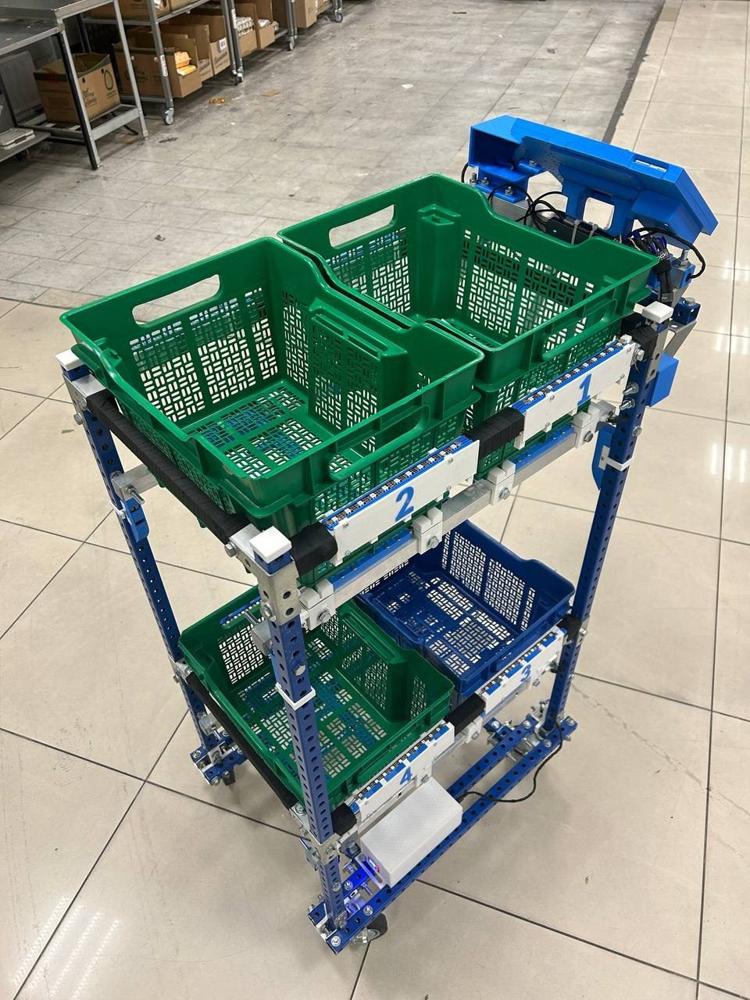
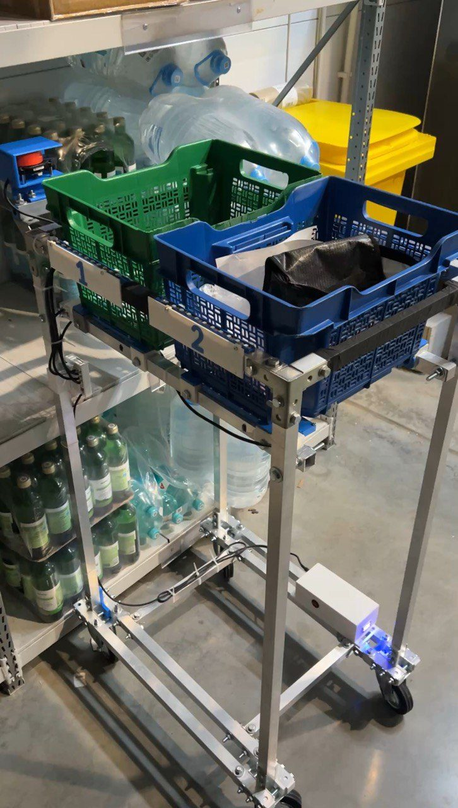

Умная тележка для сборки заказов
Программно-аппаратный комплекс для складов и дарксторов: параллельная сборка нескольких заказов одним сборщиком, контроль размещения товаров по контейнерам и печать маркировочных этикеток — без перестройки существующей складской инфраструктуры.

Проект реализован при поддержке Фонда содействия инновациям в рамках программы «Студенческий стартап» мероприятия «Платформа университетского технологического предпринимательства» федерального проекта «Технологии».
Проблема
Половина времени — перемещения
Сборщик проходит десятки километров за смену: до 50 % времени уходит на блуждания между полками и повторные обходы при сборке нескольких заказов.
Ошибки комплектования
Путаница между заказами и полками приводит к пересортице, возвратам и жалобам покупателей.
Высокая нагрузка на людей
Сборщик удерживает в голове состав нескольких заказов одновременно — это утомляет и провоцирует ошибки.
Решение
КубианЛаб — сборочная тележка с сенсорами контроля размещения товаров, терминалом сборщика и печатью этикеток. Задания на сборку поступают из информационных систем склада, а комплекс сопровождает сборщика на всех этапах — от получения задания до упаковки готового заказа.
Товары нескольких заказов размещаются в контейнерах тележки одновременно: система сама подсказывает, куда положить товар, и проверяет корректность размещения с помощью сенсоров.
- Собирает несколько заказов параллельно
- Контролирует каждый товар сенсорами
- Печатает этикетку готового заказа на месте
- Работает с существующей инфраструктурой склада

Как работает
-
1. Задание на сборку
Сборщик сканирует QR-код задания. На терминал тележки выводится сборочный лист: товары, количество, целевые контейнеры. Несколько заказов собираются параллельно.
-
2. Контролируемая сборка
Каждый товар сканируется и размещается в указанный контейнер. Сенсоры и весовой модуль проверяют размещение, ошибки подсвечиваются сразу — до упаковки.
-
3. Упаковка и этикетка
По завершении сборки заказов в контейнерах комплекс сопровождает упаковку и передает данные для печати маркировочной этикетки прямо на тележке.
Основные функции
Сборочные задания
Получение заданий из внешних систем склада по API, идентификация сборщика, отображение порядка сборки.
Параллельная сборка
Поддержка одновременной сборки нескольких заказов одним сборщиком без потери логики.
Контроль размещения
Сенсоры и весовой контроль корректности размещения товаров по контейнерам тележки.
Индикация
Световая и звуковая индикация состояния сборки и ошибок.
Печать этикеток
Передача данных на термопринтер этикеток, установленный на тележке.
Журналирование
Фиксация этапов сборки и упаковки для анализа процессов.
Упаковка
Сопровождение перекладки товаров из контейнеров в упаковку заказа.
Интеграция
Совместная работа программной и аппаратной частей в едином рабочем процессе.
Характеристики
Состав комплекса
- Мобильная сборочная тележка со съемными контейнерами
- Терминал сборщика на базе Android
- Сканер штрихкодов и QR-кодов
- Термопринтер маркировочных этикеток
- Весовой модуль и сенсоры размещения товаров
- Световая индикация состояния
Проектные показатели
- Среднее время отклика на операцию — до 1 секунды при штатной нагрузке
- Параллельная сборка нескольких заказов одним сборщиком
- Работа без перестройки складской инфраструктуры
- Корпус и контейнеры совместимы с обычными корзинами
Этап разработки и пилот
2025, август — декабрь
Разработка программного обеспечения комплекса: сборочные листы, параллельная сборка, сканирование, контроль веса и сенсоров, печать этикеток, интеграция с товарным каталогом.
2025, декабрь — 2026, январь
Сборка и отладка аппаратной части, вспомогательные сервисы (связь с учетными системами).
2026, февраль
Образец тележки проверен в складской эксплуатации: собрано около 120 заказов, включая параллельную сборку нескольких заказов.
Далее
Подготовка к пилотным внедрениям и опытной эксплуатации у операторов e-grocery.
По внутреннему хронометражу заказов на складе зафиксировано сокращение времени сборки порядка 17 % относительно обычного процесса. Это результат самостоятельного замера без независимой проверки — уточняется на пилотных внедрениях.
Команда
Дубровский Захар
Руководитель проекта, генеральный директор ООО «КубианЛаб». Магистратура МФТИ, «Е-коммерс».
Зайнуллин Валерий
Инженер, разработка программного и аппаратного обеспечения комплекса.
Сидоров Андрей
Разработка.
Контакты
ООО «КубианЛаб», Москва
- E-mail: Dubrovskii.za@phystech.edu
- Телефон: +7 904 494-00-77
- Telegram: @iiksV